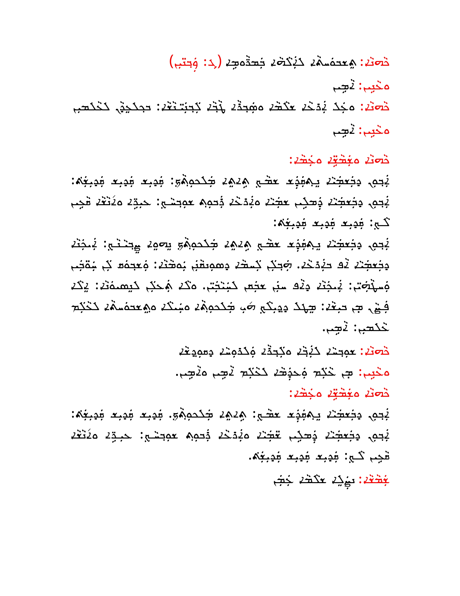
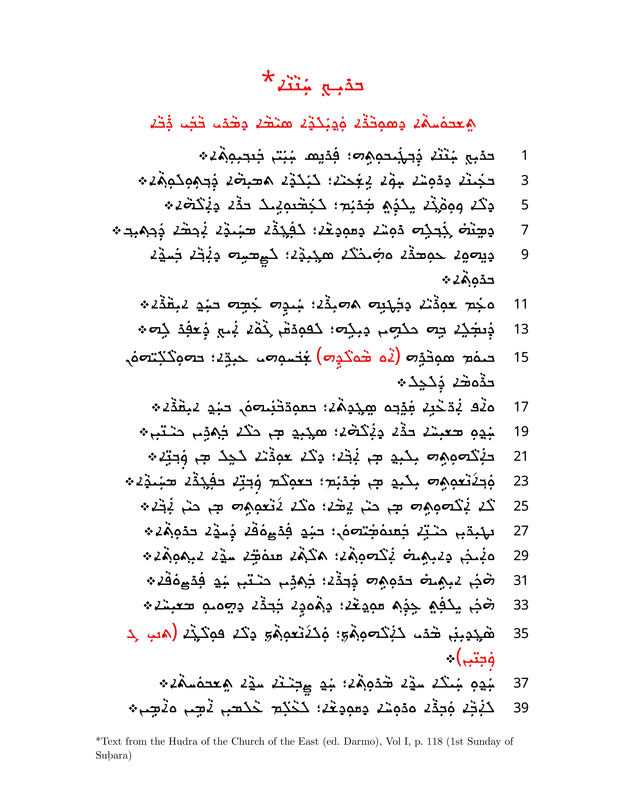
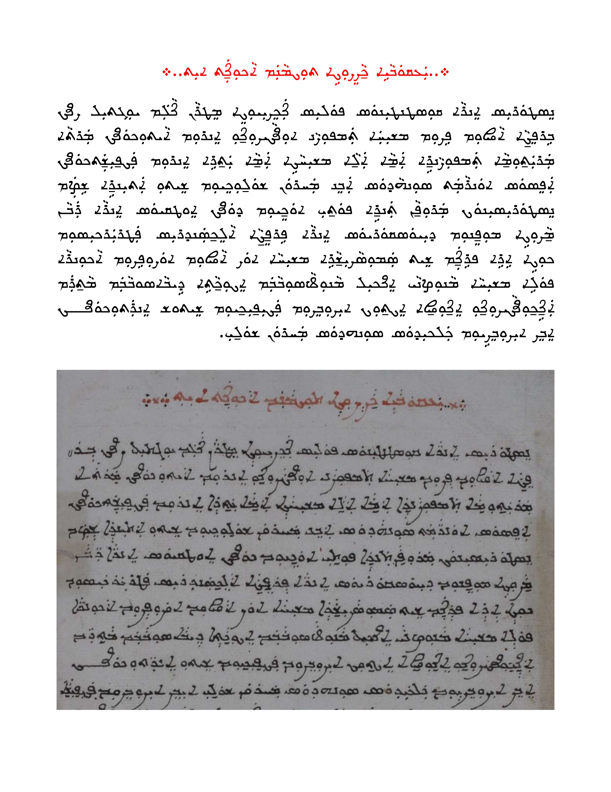
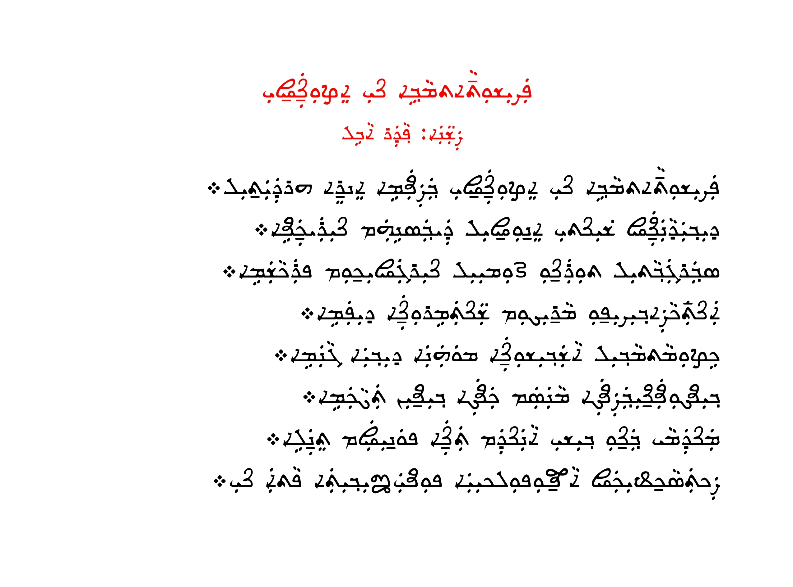

East Syriac Malankara: Kerala's First Indigenous Syriac & Karshon Font
A historic milestone for preserving Kerala's East Syriac heritage with the first Unicode-compliant font developed by and for the Nasrani community of India
Released under Open Font License, East Syriac Malankara brings Kerala's unique Syriac-Karshon tradition into the digital age
East Syriac Malankara Character Map
Below is the complete character set for the East Syriac Malankara font, showcasing its unique design features and full Unicode support:
Character Set
Syriac Characters
ܐ ܒ ܓ ܕ ܗ ܘ ܙ ܚ ܛ ܝ ܟ ܠ ܡ ܢ ܣ ܥ ܦ ܨ ܩ ܪ ܫ ܬ ܑ ܞ
Karshon Malayalam Characters
ࡠ ࡡ ࡢ ࡣ ࡤ ࡥ ࡦ ࡧ ࡨ ࡩ ࡪ
East Syriac Cross
♱
The East Syriac Malankara font includes all standard Syriac characters plus specialized Karshon glyphs for writing Malayalam in the Syriac script.
In a historic milestone for the Saint Thomas Christians of India, Hendo Academy has unveiled "East Syriac Malankara"—the first-ever Syriac and Karshon (Garshuni Malayalam or Suriyani Malayalam) font developed by the East Syriac community of Kerala. While previous efforts in Syriac computing have come from Western academia or Middle Eastern institutions, this initiative marks a significant step in India's indigenous preservation of its Syriac heritage.
The font recreates the calligraphic style found in the 18th-century Vedatharkam manuscript (Mannanam MS Syr 74) from the Syro-Malabar tradition. This didactic text, written in East Syriac script with Karshon letters (Malayalam language in Syriac script), was penned by Puthenpurackal Ya'kov Kathanar of Kanjirapally while serving as vicar of Kuruvilangadu cheriya palli in 1768.
A Landmark Achievement for Kerala's Syriac Tradition
For centuries, the Saint Thomas Christians have maintained a rich tradition of Syriac liturgy and Syriac-Malayalam-Karshon literature. However, digital tools for this heritage have largely been developed outside India, often prioritizing Western Syriac (Serto) or Classical Syriac scripts.
"East Syriac Malankara" changes this narrative—it is the first Unicode-compliant font designed by and for the East Syriac community of Kerala, ensuring that their unique scriptural and linguistic identity is preserved in the digital era.
Two Variants for Different Needs
"East Syriac Malankara" (Modernized)
A refined, legible version optimized for digital publishing, liturgical books, and everyday use. This variant balances historical authenticity with contemporary needs, making it perfect for modern publications.
"East Syriac Malankara Classical"
A faithful reproduction of the original Vedatharkam manuscript's calligraphy, retaining its historic charm for academic and ceremonial purposes. Ideal for scholars and those seeking an unaltered connection to Kerala's manuscript tradition.
This dual approach ensures that the font serves both contemporary users and scholars seeking an unaltered connection to the past.
Why This Matters
- First Indigenous Effort: Unlike previous Syriac computing projects from the West, this is Kerala's own contribution, reflecting the living tradition of the Malankara East Syriac Church.
- Preserving Karshon Malayalam: Many historic Malayalam texts were written in Malayalam Garshuni (Syriac script)—this font helps digitize them, making them accessible to researchers and devotees.
- Liturgical Revival: Enables the digitization of East Syriac prayers, hymns, and scriptures in their authentic form, supporting the revival of traditional worship.
Peculiarities of the Font
Hendo Academy's groundbreaking "East Syriac Malankara" font stands apart from common East Syriac typefaces like "East Syriac Adiabene" through several distinctive features that faithfully reflect Kerala's manuscript tradition while innovating for modern use:
Uniform Width & Kerala Aesthetic
Unlike Mesopotamian East Syriac fonts that often feature bold, variable strokes, this font maintains a more consistent width, mirroring the elegant uniformity found in Kerala's manuscript tradition.
Distinct Character Shapes
- Zain (ܙ) appears in a distinctive looped form
- Ae (ܥ) is angled differently from standard East Syriac
- Ṣāḏē (ܨ) features a uniquely curved structure
- Waw (ܘ) in the original manuscript joins letters on the left side, though Unicode shaping limitations prevent full replication in the digital font
Character Comparison
See the difference between standard Karshon and the new East Syriac Malankara font:
Karshuni Malayalam Support
- Includes newly designed glyphs for Malayalam letters like Bha(ࡦ) and Ja (ࡡ), which were not present in the original manuscript but were carefully crafted to match the historic style
- Features special terminal Nun (ܢ) and Kap (ܟ) forms for Karshuni usage
Liturgical & Cultural Elements
- Uses the Paraur Cross (a traditional cross style from Kerala) as the East Syriac cross symbol
- Introduces a new ligature for Ra + Nūn (ࡧܢ) combination
Sample Documents
Below are examples of the East Syriac Malankara font in use, showcasing both pure Syriac text and Karshon (Suriyani Malayalam):
Classical Syriac Samples

Classical East Syriac prayer text

East Syriac liturgical hymn Breek Hannana
Karshon (Suriyani Malayalam/ Malayalam Garshuni) Samples

Font vs Manuscript comparison

Karshon rendering of Parishudhatmave nee ezhunnalli - a popular hymn by Fr. Abel
These examples demonstrate how the East Syriac Malankara font faithfully preserves the calligraphic tradition of Kerala's manuscript heritage while providing the clarity and consistency needed for modern digital publication.
The Meticulous Creation Process
The font was developed through a rigorous, manual design process:
- High-resolution scans of the Vedatharkam manuscript (Mannanam MS Syr 74) were obtained
- Each character was painstakingly vectorized by hand to preserve the original calligraphy
- Issa Benyamin's East Syriac calligraphy manual guided aesthetic proportions for balanced letterforms
- FontForge was used to construct the final font in TTF (TrueType) format
Reviving the Karshon Tradition
Beyond its technical merits, "East Syriac Malankara" represents a crucial step in revitalizing the Karshon (Garshuni Malayalam or Suriyani Malayalam) writing tradition that has been central to Kerala's Christian heritage for centuries.
Karshon—the practice of writing Malayalam language using Syriac script—was once widespread among Saint Thomas Christians, producing a wealth of theological, liturgical, and historical literature. However, this unique writing system has faced decline in recent generations due to the lack of Syriac knowledge and standardized digital tools.
With this font, several important developments become possible:
- Digital Preservation: Thousands of Karshon manuscripts and printed texts can now be digitized in their authentic script, preventing the loss of this literary heritage
- Educational Revival: Cultural institutions like Hendo Academy can now teach Karshon writing using familiar digital interfaces, making it accessible to younger generations
- Contemporary Usage: Modern liturgical and educational materials can be produced in both Malayalam and Karshon, maintaining this distinctive aspect of Kerala Christian identity
- Cultural Continuity: The unique East Syriac style that developed in Kerala can continue to evolve in the digital age rather than being replaced by generic Middle Eastern forms
This revival of Karshon writing represents a significant cultural achievement, connecting Kerala's Saint Thomas Christians with their distinctive literary and liturgical tradition that spans nearly two millennia.
Availability & Next Steps
| Font Version | Description | Status | Download |
|---|---|---|---|
| East Syriac Malankara | Modernized version optimized for digital publishing and everyday use. |
|
Download |
| East Syriac Malankara Classical | Faithful reproduction of the original Vedatharkam manuscript's calligraphy for academic and ceremonial purposes. |
|
Expected 2025 |
The modernized version of "East Syriac Malankara" will be released first, with the Classical variant following later for specialized use. Both will be freely available under the Open Font License (OFL) to ensure wide accessibility.
Hendo Academy has already developed resources to support Karshon typing:
- Syriac Phonetic Karshon Keyboard Layout - A custom keyboard layout designed specifically for Karshon typing
- Typing Karshon in LibreOffice Writer on Windows - Step-by-step guide for Windows users
- Typing Karshon in LibreOffice Writer on macOS - Comprehensive guide for Mac users
Additional resources planned for development include:
- Educational materials to promote the script's use among students and clergy
This project reaffirms Kerala's East Syriac community as active contributors—not just inheritors—of the global Syriac heritage.
Download now and experience the first-ever East Syriac font born from Kerala's manuscript tradition!
Try the Font Online
Want to see the East Syriac Malankara font in action without downloading it? Visit our online Syriac Editor to try it out immediately:
- Go to hendoacademy.org/editor
- Click on the Settings (gear icon ⚙️) button
- Select "East Syriac Malankara" from the font dropdown menu and click "Save"
- Start typing to see the beautiful East Syriac Malankara characters!
The online editor is a great way to experiment with East Syriac and Karshon writing without installing anything on your device. You can also use it to create and share text samples with others.